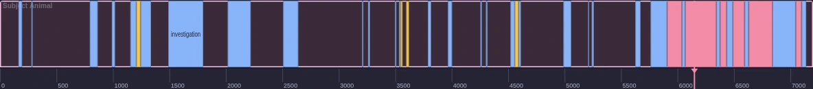
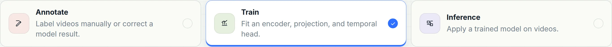
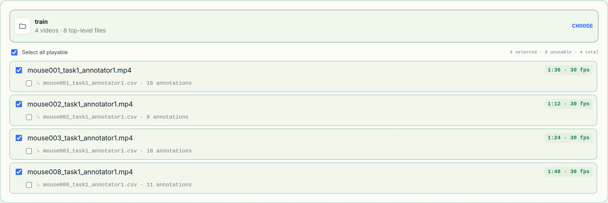
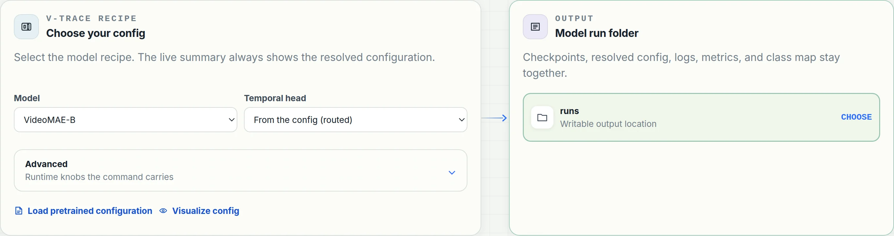
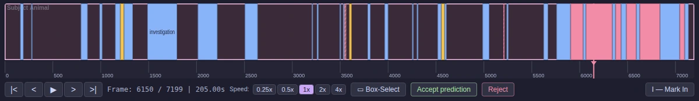

Annotate
Open a folder of videos in the annotator and mark behaviors on the timeline. Labels are written as one CSV beside each video, on the computer running the browser — nothing is uploaded.
Steps 01–03Video-based Temporal Recognition and Annotation of Continuous Ethograms of Animal Behavior
Label a few recordings in the browser, train a detector on them, and have it annotate the rest.
Quick Start
Create a Python 3.9+ environment with conda, mamba, or uv first. Then
vtrace opens an interactive session and starts the
annotator with it, so nothing has to be launched by hand — open the
address it prints in Chrome or Edge. Under the start screen a command
box waits for the command the annotator will write.
Training, evaluation and prediction need a CUDA-capable PyTorch environment; annotation does not.
Installing, the session, and serving over SSH# pick one environment manager
$ conda create -n vtrace python=3.11 pip
$ conda activate vtrace
# or mamba
$ mamba create -n vtrace python=3.11 pip
$ mamba activate vtrace
# or uv
$ uv venv --python 3.11 --seed .venv
$ source .venv/bin/activate
# then, in any of them
$ python -m pip install vtrace-behavior
$ vtrace prepare --weights all
$ vtraceWorkflow
Everything happens in two places: the annotator in your browser, and
the vtrace session in a terminal. The browser is where
recordings are labeled and a run is configured. The session is where
the command the browser wrote is pasted and run.
Open a folder of videos in the annotator and mark behaviors on the timeline. Labels are written as one CSV beside each video, on the computer running the browser — nothing is uploaded.
Steps 01–03On the Configuration page, pick the task, the folder and the videos, the recipe, and where the run goes. The page writes the command — with the folders named, not located.
Steps 04–07
Paste the command into the box the vtrace session opens
on. The session finds each named folder on the machine it runs on,
then trains, and scores every epoch against the evaluation videos.
Point the finished model at new recordings. Predictions land beside each video in the shape the annotator imports, so accepting or correcting a bout happens where the labeling happened.
Step 09The App, Step by Step
The app is one static HTML page served at
http://localhost:8765, with two screens:
Annotation, where bouts are marked on a timeline, and
Configuration, where a folder and a recipe become the
command that trains on them. It reads and writes through the File
System Access API, so use Chrome or Edge. Nothing is uploaded; every
file it touches is on the computer running the browser.
Steps 01–03 are annotation. Steps 04–07 assemble a run and end at a command written for you; step 08 is pasting it into the session. Step 09 comes back to the annotator once a model has predicted something.
Open Video Folder grants the page read and write
access to one directory. Every .mp4,
.mov, .avi, .mkv or
.webm in it becomes a row in the video list, and any
<video>.csv already beside a video is loaded as
its existing labels.
Coming from the configuration page, there is no folder to open: step 02 hands its folder and its video selection straight to the annotator, which opens with them already loaded. If the browser has forgotten the access grant, one Continue with … click restores it.
Dropping files in instead works too, but the page then has no folder to write back into, so saving is manual.
<video>.csv into the same folder, 500 ms after an edit.
Click a behavior in the palette, then I at the start of a bout and O at the end. The bout is drawn on the timeline in that behavior's colour, and the label currently under the playhead is shown over the video.
Arrow keys step one frame; Shift with them jumps a
second. The frame counter under the timeline is the authority —
a bout is stored as both a time span and a frame span, so nothing
drifts on a variable-frame-rate recording.

mouse008_task1_annotator1, part-way through labeling. Every bar on the strip is one bout.The strip is the whole recording at once. Colour is the behavior; width is the duration. The pink playhead is where the video is, and clicking anywhere on the strip moves it there.
Because it is the whole video rather than a window, the shape of the session is visible without scrubbing: below, four minutes of CalMS21 in which the two mice mostly investigate each other (blue), mount twice (yellow), and then break into a sustained bout of attacks (pink) in the last minute.

Switch to Configuration and pick a task. Annotate sends you back to the timeline; Train fits a model on labeled video; Inference applies a finished one. Everything below the chooser changes to ask only for what that task needs, which is why there is no form full of fields that do not apply.

Choosing a folder scans it once: each video is probed for its real
duration and frame rate, and any <video>.csv
beside it is counted — as is a <video>.json
written by an earlier version of the annotator, which trains just
the same. So the list tells you, before anything runs,
which recordings are actually readable and how many bouts each one
carries.
Tick the videos for this run. A recording the browser cannot decode is marked unusable rather than silently included, and a video with no CSV shows up with nothing to train on.

The model preset carries the architecture and the schedule, so the only two questions here are which preset and where the run folder is written. Advanced holds the runtime knobs the command will carry; leaving them alone leaves the config's own choices in place.

The page ends with the same configuration rendered twice, one for
each place it can run. The first is for the vtrace
session: a keyword per line, the flags under it,
then between steps — the shape the session's box
takes. The second is a shell command line, for a
terminal or a job script. A live summary above them names the
task, the preset and the output, so what you are about to paste
is never a surprise.
Look at the folders. A browser is never told where a picked folder
lives, only what it is called and what is in it, so the page writes
the name, not a path:
<train#8b1d0c47>/mouse001.mp4. The digits after
# are a fingerprint of the folder's contents. Whoever
runs the command looks the name up on their own machine — which is
the point: a folder you annotated through a network mount on a
laptop has a different path on the GPU box that will train on it,
and the same name and files on both.

Back in the terminal where vtrace is running, the
command box is already open under the start screen. Paste the
session form and press Enter. The first thing printed
is where each named folder was found on this machine — then the
run starts. If you closed the box, run at the
vtrace > prompt opens it again.
The lookup is by name and by contents. The session searches three
levels under the working directory, its parent and your home
folder, plus every folder it has resolved before, and keeps only
the candidate whose files match the fingerprint. Two folders both
called train are told apart by what is in them; a
folder whose contents changed since the command was copied is
refused rather than guessed, and the page's command is copied again.
vtrace far from the data? Start it nearer, or set VTRACE_ROOTS=/data:/mnt/lab to add places to search..vtrace-folder marker in it and the session matches on that.vtrace on the server. The names are the same on both sides; the paths were never in the command.train
--model maev2b
--output '<runs#3f9a2c1e>'
--pairs '<train#8b1d0c47>/mouse001.mp4=<train#8b1d0c47>/mouse001.csv'
then
eval
--pairs '<test#c41e77a0>/mouse071.mp4=<test#c41e77a0>/mouse071.csv'enter runs it · ctrl-j starts a new line · esc closes the box for a plain prompt
<runs#3f9a2c1e> → /data/calms21/runs
<train#8b1d0c47> → /data/calms21/train
<test#c41e77a0> → /data/calms21/test
=== step 1/2: train --model maev2b --output /data/calms21/runs … ===Enter runs what was pasted. The three lines after the box are the session saying which folder each name became, before anything runs.
Prediction writes <video>.pred.csv beside
each video. Open that folder and the predictions come in as
draft bouts carrying their confidence, with
Accept prediction and Reject
beside the playback controls.
Dragging a predicted bout's edge instead of accepting it marks it
corrected, so the file records the difference between
a bout you agreed with and one you fixed.
Once a file holds both, Show · Both / Human / Model in the toolbar picks which provenance the timeline draws. It is a view, not an edit — hidden bouts stay in the file and come back with the other setting. The configuration page's video list says which each file holds and sets the one a video opens with.
source column, so one file can hold hand-drawn bouts and accepted model bouts side by side.
Running It
Every command works both ways, and they take identical arguments. The difference is who fills in the folders.
vtrace with no arguments. The annotator starts on a
background thread, the start screen prints the address it is
listening on, and a command box opens under it. Paste the session
form the configuration page wrote and press Enter. Its folders
are named — <train#8b1d0c47> — and the session
looks each name up on the machine it runs on, keeps the folder
whose contents match, and prints the path it took. Esc leaves the
box for the vtrace > prompt; run
opens it again; exit leaves.
The same commands as ordinary command lines, which is what a
cluster needs: put one in an sbatch script and it
runs unattended. Nothing is looked up here, on purpose — a job
that guesses a folder, or stops to ask, is worse than one that
never starts. A command still carrying folder tokens is refused
with a list of what to replace. Use the page's shell form, which
prints that same list under the command.
Mode 1 · the start screen, then the box
██╗ ██╗ ████████╗██████╗ █████╗ ██████╗███████╗
██║ ██║ ╚══██╔══╝██╔══██╗██╔══██╗██╔════╝██╔════╝
██║ ██║ ███╗ ██║ ██████╔╝███████║██║ █████╗
╚██╗ ██╔╝ ╚══╝ ██║ ██╔══██╗██╔══██║██║ ██╔══╝
╚████╔╝ ██║ ██║ ██║██║ ██║╚██████╗███████╗
╚═══╝ ╚═╝ ╚═╝ ╚═╝╚═╝ ╚═╝ ╚═════╝╚══════╝
Video-based Temporal Recognition and Annotation of
Continuous Ethograms of Animal Behavior v1.0.0
Annotator running — open it in Chrome or Edge
http://localhost:8765 read and label videos on this computer
Train a model, or predict videos
run open the command box: paste what the annotator wrote
Try the demo
demo download the official CalMS21 videos + the detector
demo predict label the 19 held-out test videos, write predictions
demo train train on the 70 official training videos, score the test split
help documentation, on the web
exit leave the session
Paste the command the annotator wrote into the box below, or type one.
Esc closes the box for a plain prompt.The box opens right under this screen — step 08 above shows it with a command pasted in. Every line on the screen is a real command, so whatever is copied goes through the ordinary argument parser.
Mode 2 · a shell refuses a token, and says why
$ vtrace train --model maev2b --output '<runs#3f9a2c1e>' --pairs '<train#8b1d0c47>/mouse001.mp4=…'
This command names folders instead of locating them, so it cannot run
as it is here. The `vtrace` session finds them — start it and paste the
command into the box it opens. Anywhere else, replace each token with
the folder's full path on the machine that runs the command:
<runs#3f9a2c1e> the folder called "runs" that was picked in the page
<train#8b1d0c47> the folder called "train" that was picked in the pageNothing ran. The page's shell form carries the same tokens without the digits and lists them under the command, which is the list to work through before the script below is submitted.
Mode 2 · a job script, tokens replaced
#!/bin/bash
#SBATCH --job-name=vtrace-calms21
#SBATCH --gres=gpu:a100:1
#SBATCH --time=06:00:00
$ conda activate vtrace
# <runs> → /scratch/$USER/calms21/runs, <train> → /scratch/$USER/calms21/train,
# <test> → /scratch/$USER/calms21/test. `then` chains steps here exactly as
# it does at the prompt — the split happens before any parsing.
$ vtrace train --model maev2b --nproc 1 \
--output /scratch/$USER/calms21/runs \
--pairs /scratch/$USER/calms21/train/mouse001.mp4=…/mouse001.csv \
/scratch/$USER/calms21/train/mouse002.mp4=…/mouse002.csv \
--eval-pairs /scratch/$USER/calms21/test/mouse071.mp4=…/mouse071.csv \
then predict --input /scratch/$USER/calms21/new
Submitted with sbatch train.sbatch. Nothing about the
command changes between the two modes except who wrote the paths —
the session is a nicer place to type it, not a different program.
CLI Reference
Each also works from a shell, prefixed with vtrace.
| Command | Purpose | Example |
|---|---|---|
vtrace |
Open the interactive session and start the annotator. | vtrace |
vtrace app |
Serve the annotator on its own, without the session. | vtrace app --port 8765 |
vtrace demo |
Download and run the CalMS21 walkthrough. | vtrace demo predict |
vtrace prepare |
Download model weights ahead of time. | vtrace prepare --weights all |
vtrace train |
Prepare the named pairs and train a detector. | vtrace train --model maev2b --pairs /data/calms21/train/mouse001.mp4=/data/calms21/train/mouse001.csv --output /data/calms21/runs |
vtrace eval |
Evaluate a trained model, optionally on new paired data. | vtrace eval --model-dir /data/calms21/runs/model_20260827_014500 |
vtrace predict |
Predict on new videos and write a file beside each one. | vtrace predict --model-dir /data/calms21/runs/model_20260827_014500 --input /data/new |
then |
Chain steps. A later step reuses the model an earlier one produced. | vtrace train --pairs /data/calms21/train/mouse001.mp4=/data/calms21/train/mouse001.csv --output /data/calms21/runs then eval --pairs /data/calms21/train/mouse002.mp4=/data/calms21/train/mouse002.csv then predict --input /data/new |
vtrace update |
Check PyPI for a newer release and offer to install it. | vtrace update --check-only |
Train on four videos
$ vtrace train --model maev2b \
--output /data/calms21/runs \
--pairs /data/calms21/train/mouse001.mp4=/data/calms21/train/mouse001.csv \
/data/calms21/train/mouse002.mp4=/data/calms21/train/mouse002.csv \
--eval-pairs /held/c.mp4=/held/c.csv
Preparing 2 videos …
mouse001.mp4 242 bouts over 712.1s (kept whole)
mouse002.mp4 198 bouts over 654.9s (kept whole)
Run folder: /data/calms21/runs/model_20260827_014500
epoch 9/10 loss 0.183 mAP 0.912 ← best
--eval-pairs is what makes the run write
best.pth: without it no epoch is measured, so the last
one is published as last.pth instead.
Label a folder of new recordings
$ vtrace predict \
--model-dir /data/calms21/runs/model_20260827_014500 \
--input /data/new_recordings \
--threshold 0.25
Prediction CSV: /data/new_recordings/mouse071.pred.csv (214 bouts)
Prediction CSV: /data/new_recordings/mouse072.pred.csv (188 bouts)
Prediction CSV: /data/new_recordings/mouse073.pred.csv (240 bouts)
# open that folder in the annotator to review them
Omit --threshold and the run's own
recommended_thresholds.json is applied per class.
All three, as one chain
vtrace > train --output /data/calms21/runs \
--pairs /data/calms21/train/mouse001.mp4=/data/calms21/train/mouse001.csv \
then eval --pairs /held/c.mp4=/held/c.csv \
then predict --input /data/new_recordings
A later step reuses the model the training step produced, so its
timestamped folder never has to be typed. train … then eval …
is one run, not two: the eval step names the videos the loop scores
each epoch against.
Files
There are three of them: the annotation CSV a human writes, the run folder training produces, and the prediction CSV inference writes. All three are plain text or a directory of plain files, and the first and third are the same format.
Written by the annotator
# trace-meta: {"annotation_version": "behavioral-annotator-v1",
# "fps": 30, "duration": 240, "frame": 7200}
labelId, timestamp, endTimestamp
investigation, 5.433, 6.533
investigation, 9.267, 9.633
investigation, 38.467, 40.267
mount, 40.267, 41.500
attack, 196.933, 201.300
Real bouts from CalMS21 mouse008_task1_annotator1.
Padding the columns is optional and harmless — the reader trims
the header and the values, so an aligned file trains exactly like
a dense one.
One file per video, named <video>.csv and
written beside it. Three columns, and # lines are
skipped — that is the whole format. Times in seconds are what
training reads; frame numbers are re-derived from the video's own
presentation timestamps, so nothing here has to know the frame
rate.
A file that has been through a review pass carries three more columns. Only the last of them changes what training sees.
model, or empty. Without it a reviewed prediction would come back as an anonymous human label.rejected row is a false positive they threw out, and prep skips it; it stays in the file so the decision travels with the data.Written by vtrace predict
# trace-meta: {"trace_prediction_version": 1,
# "video": "mouse071_task1_annotator1.mp4",
# "class_map": ["attack", "investigation", "mount"],
# "threshold": 0.25}
labelId, timestamp, endTimestamp, score, predictionId
investigation, 12.433, 15.900, 0.9412, mouse071::0
attack, 20.167, 23.033, 0.8815, mouse071::1
mount, 41.200, 48.767, 0.7604, mouse071::2
investigation, 63.500, 64.133, 0.3110, mouse071::3
One per video, written beside it as
<video>.pred.csv and replaced on re-run, so
a video has exactly one current prediction rather than a pile of
timestamped folders. The first three columns are the annotation
format — that is what lets a corrected prediction be a training
file with nothing to convert.
--threshold is the minimum needed to reach the file at all.<stem>::<n>. Stable within a file, so a review decision has something to name.
Once reviewed in the annotator, the bout is saved back with
source=model and
review=accepted|rejected|corrected, so the judgement
travels with the data.
Written by vtrace train
model_20260827_014500/
├── best.pth # or last.pth, when no epoch was scored
├── classmap.txt # the class names, in training order
├── config_resolved.py # the configuration the run actually used
├── config.txt # the config file it started from
├── dataset.json # the training corpus index
├── prep.log # per-video detail from indexing
├── checkpoint/ # epoch_0.pth, epoch_1.pth, ...
├── eval_data/ # the evaluation corpus, when the run had one
└── eval_20260827_020000/
├── metrics.json
├── recommended_thresholds.json
└── result_detection.json
Training creates model_YYYYMMDD_HHMMSS/ under
--output. Everything needed to rebuild and reuse the
model is inside it, so --model-dir is the only thing
evaluation or prediction ever needs to be told.
config.txt, so editing the original cannot change how a finished model is rebuilt.Two files from inside a run
$ cat classmap.txt
attack
investigation
mount
$ head dataset.json
{ "database": {
"mouse008_task1_annotator1": {
"frame": 7200,
"duration": 240.0,
"subset": "train",
"source_video": "…/mouse008_task1_annotator1.mp4",
"source_frame_offset": 0,
"source_pts_table": "…/mouse008_task1_annotator1.mp4.pts.npy",
"proxy_video": "…/s144_sq_crf23_g30_v1/proxy.mp4",
"annotations": [
{ "label": "investigation",
"segment": [5.433, 6.500],
"timestamp_sec": [5.433, 6.500],
"frame_segment": [163, 195] }, …
]
} } }Preparation runs automatically as the first part of a training or evaluation command. It indexes each video whole — nothing is cut into clip files — and writes two sidecars next to the source that later runs reuse.
.pts.meta.json. This is what turns the CSV's seconds into frame indices, correctly, whether the recording is constant or variable frame rate.source_* stays authoritative for every timestamp; this only redirects which file frames come from.Nothing is split. Every video a command names is training data, and evaluation videos are a corpus of their own that you name separately.
Models
Configurations name their backbone by filename. Any registered name is
fetched from the project's GitHub release on first use, checked
against its SHA256, and cached under ~/.vtrace/pretrained
so later runs and other configs reuse the same copy. No checkpoint is
bundled in the repository or the wheel.
--model maev2b
# VideoMAE V2 ViT-B, frozen + adapters (default)
--model maev2b-distilled
# same ViT-B, adapters distilled from V-JEPA 2
--model vjepa2
# V-JEPA 2 ViT-L, upper half fine-tuned
$ vtrace prepare --weights all
vit_b_k710_dl_from_giant.pth ✓ cached
vjepa2_vitl_fpc64_256.pth ↓ 1.2 GB …Demo
The demo is the complete Task-1 mouse social-behavior benchmark in its official split — 70 training videos and 19 test videos. V-TRACE re-hosts none of it: the annotation CSVs ship with the package, and the videos come straight from the official CalMS21 release, one at a time over HTTP range requests, so nothing pulls the 28 GB archive and an interrupted fetch keeps every video it finished. Predicting takes about a minute; training is a real run on the full benchmark.
vtrace > demo predict # pulls one video, ~1 minute
Predicting on mouse083_task1_annotator1.mp4
with ~/.vtrace/demo/model
22 bouts across 2 behaviors → mouse083_task1_annotator1.pred.csv
investigation 17 bouts 39.8s 24.4% best 0.88
mount 5 bouts 18.3s 11.2% best 0.92
58.1s of 163s labelled (36% of the recording)
annotated ━█████████━━━███━━━━━━━━━━█━━━━━━━████━━━█━━█━█━━━━━█████━━━█━━━━
predicted █████████━━━━██━━━███━━━━━█━━━━━━━█████━━━━━█━█━━━━━████━━━━━━━━█━━━━
0s 41s 82s 122s 163s
█ investigation █ mount
annotated (32) predicted (22)
investigation 0.9–16.7s investigation 0.6–16.0s
investigation 22.8–25.3s investigation 22.5–25.4s
investigation 25.7–26.3s investigation 30.3–32.0s
… 24 more
Against the CalMS21 annotation for this video (4881 frames, threshold tuned per class)
threshold precision recall F1
investigation 0.64 0.80 0.81 0.80
mount 0.12 0.91 0.84 0.87
macro F1 0.84
thresholds tuned on this video, so this is the best it can do here
Review them in the annotator
1. (already running in this session)
2. Open Video Folder → ~/.vtrace/demo/videos/test
3. Pick mouse083_task1_annotator1.mp4 — the predictions load with it.
vtrace > demo download # train ~19 GB, test ~11 GB
Fetching 70 train videos (18.83 GB) from https://data.caltech.edu/…
into ~/.vtrace/demo/videos/train
ctrl-c stops it.
all 53 ━━━━━━━━━━━━━━━━━━━━━━━━━━━━━━━━━━━━━━━━━━━━━ 67% 8.6/12.8 GB 6.7 MB/s 10:23
9/53 mouse018….mp4 ━━━━━━━━━━━━━━━━━━━━━━━━━━━━━━━━━━━━━━━━━━━━━ 42% 104.9/248.4 MB 6.7 MB/s 00:22
vtrace > demo download --split test
vtrace > demo download --from /mnt/share/task1_videos_mp4.zip
vtrace > demo download --verify # CRC-check what is on disk
vtrace > demo train # 10 epochs, ~3 h on one GPU, ~23 GB VRAM
Training on 55 CalMS21 videos
15 more, split out of the same 70 by behavior, score each epoch
the benchmark's 19-video test split is scored once, after trainingThe validation set is cut out of the training videos, stratified so each behavior lands on both sides in proportion; the 19 test videos are touched once, after training, to score the finished checkpoint — the run's benchmark figure. If you use the demo data, cite CalMS21 — Sun et al., NeurIPS 2021 Datasets & Benchmarks.
What each demo step downloads and runsLicense
Source, released checkpoints and issue tracker all live in the repository. The CalMS21 demo data belongs to its authors — cite CalMS21 (Sun et al., NeurIPS 2021 Datasets & Benchmarks) if you use it.